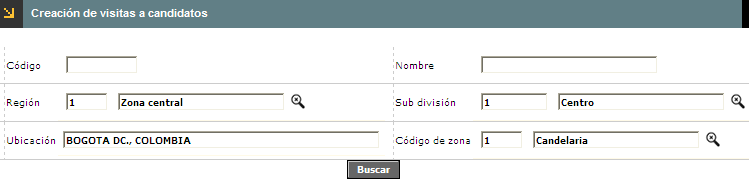
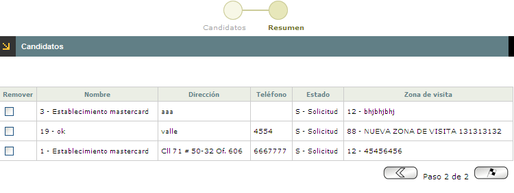

Creación de visitas de candidatos |
A través de esta opción, se pueden seleccionar los establecimientos que cumplen con ciertos requisitos que la entidad solicita para poder ser cliente. Luego de ello seran visitados para continuar con la gestión de aprobación.
Cuando el usuario selecciona esta opción, el sistema despliega un wizard de dos pasos. En el primero de ellos se seleccionan los candidatos, con su respectiva información, a los cuales se les realizará la visita según concepto previo de la entidad. El siguiente formulario corresponde a Resumen.
Los bloques y la información del primer paso del wizard son:
Candidatos:

Filtro: Se pueden realizar consultas a través de las siguientes opciones:

Código |
Campo numérico de máximo 8 dígitos, en el que se registra el código asignado a cada uno de los candidatos. |
Nombre |
Este campo alfanumérico de 30 posiciones, permite ingresar el nombre del candidato asociado con el código anterior. |
Región |
Campo alfanumérico de tres dígitos, que contiene el código asignado a cada Región. Se puede diligenciar de forma manual o desplazando la lista de valores. |
Sub división |
Campo alfanumérico, que contiene el código asignado a cada Sub división. Se diligencia desplazando la lista de valores. |
Ubicación |
Campo obligatorio, diligenciable según la información contenida en el campo Sub división , en esta se diligencian los datos contenidos en la tabla Información geopolitica. |
Código de zona |
Campo numérico de 2 dígitos, en el cual se registra el código asignado por la entidad a cada una de las zonas que conforman las subdivisiones. |
Corresponde al segundo paso del Wizard, en el cual el usuario selecciona los candidatos a ser visitados.

El formulario cuenta con botones en la parte inferior derecha que le permiten al usuario Retroceder y Avanzar al anterior o siguiente paso del wizard.